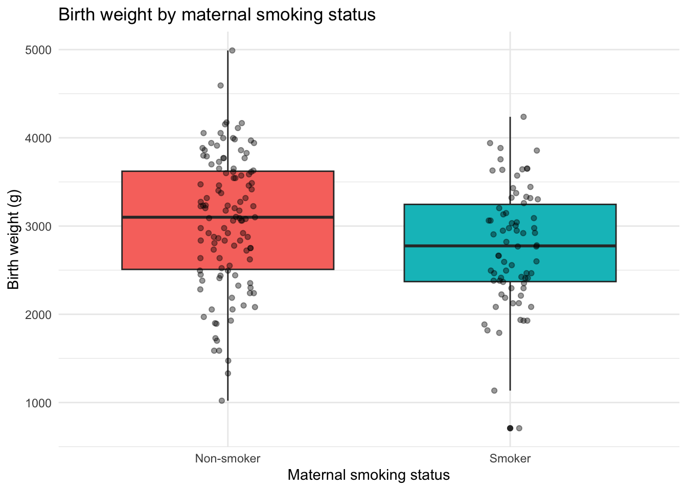
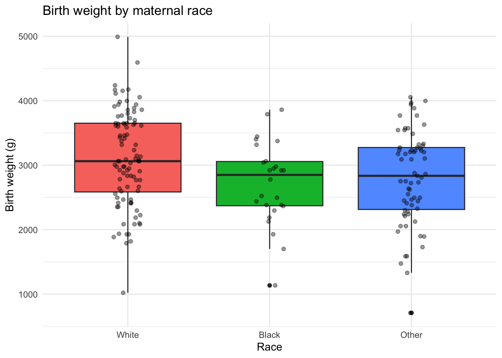
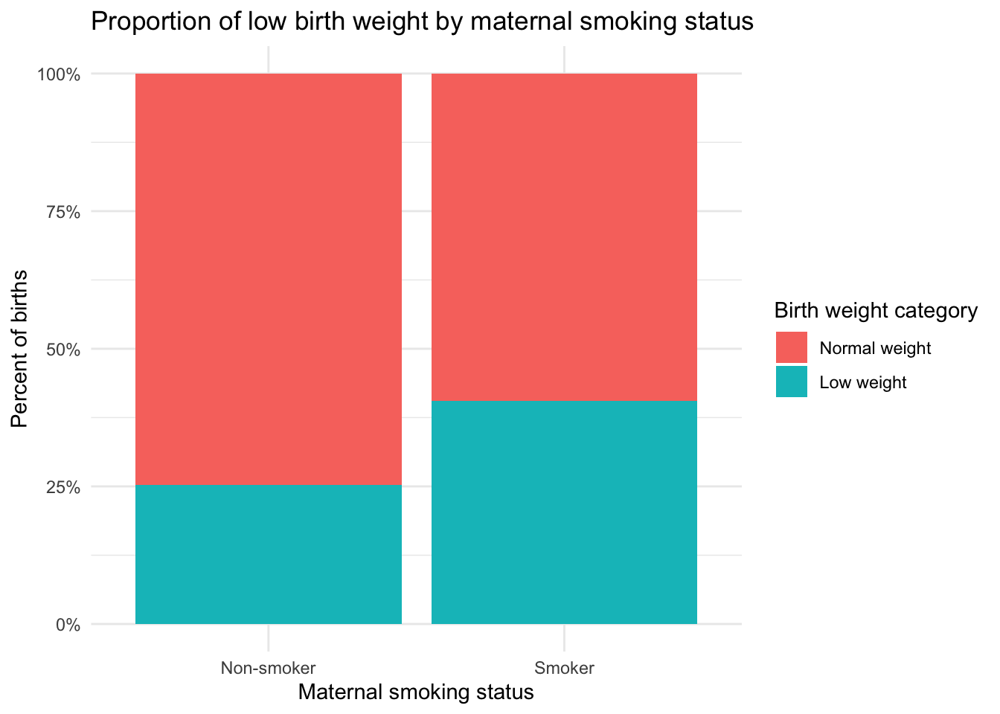

Chapter 7 Lab 6: Biostatistics and Computational Testing in R
Objectives:
- To understand what a statistical hypothesis is, and the logic behind p-values
- To explore and summarize a real, publicly available human health data set
- To execute and interpret a t-test, including checking its assumptions
- To execute and interpret a one-way ANOVA and post-hoc comparisons
- To execute and interpret a chi-squared test of association
- To connect statistical results back to a biological/clinical conclusion
Up to now we’ve described and visualized data. Today we take the next step: asking whether the patterns we see are likely to be real, or could plausibly be due to chance. We’ll do this using a real, publicly available human health data set instead of a simulated one.
7.1 The data set: risk factors for low infant birth weight
We will use the birthwt data set, which comes bundled with the MASS package (installed automatically with R). It was collected at Baystate Medical Center, Springfield, Massachusetts, and has been used for decades as a teaching data set in biostatistics because it’s real clinical data with a clear, important public health question behind it: what maternal risk factors are associated with low infant birth weight?
## 'data.frame': 189 obs. of 10 variables:
## $ low : int 0 0 0 0 0 0 0 0 0 0 ...
## $ age : int 19 33 20 21 18 21 22 17 29 26 ...
## $ lwt : int 182 155 105 108 107 124 118 103 123 113 ...
## $ race : int 2 3 1 1 1 3 1 3 1 1 ...
## $ smoke: int 0 0 1 1 1 0 0 0 1 1 ...
## $ ptl : int 0 0 0 0 0 0 0 0 0 0 ...
## $ ht : int 0 0 0 0 0 0 0 0 0 0 ...
## $ ui : int 1 0 0 1 1 0 0 0 0 0 ...
## $ ftv : int 0 3 1 2 0 0 1 1 1 0 ...
## $ bwt : int 2523 2551 2557 2594 2600 2622 2637 2637 2663 2665 ...## low age lwt race smoke ptl ht ui ftv bwt
## 85 0 19 182 2 0 0 0 1 0 2523
## 86 0 33 155 3 0 0 0 0 3 2551
## 87 0 20 105 1 1 0 0 0 1 2557
## 88 0 21 108 1 1 0 0 1 2 2594
## 89 0 18 107 1 1 0 0 1 0 2600
## 91 0 21 124 3 0 0 0 0 0 26227.1.1 Understanding the columns
| Column | Meaning |
|---|---|
low |
1 = birth weight < 2.5 kg (low), 0 = normal birth weight |
age |
mother’s age in years |
lwt |
mother’s weight (lbs) at last menstrual period |
race |
1 = white, 2 = black, 3 = other |
smoke |
smoking status during pregnancy (1 = yes, 0 = no) |
ptl |
number of previous premature labors |
ht |
history of hypertension (1 = yes, 0 = no) |
ui |
presence of uterine irritability (1 = yes, 0 = no) |
ftv |
number of physician visits in the first trimester |
bwt |
birth weight in grams (the actual continuous outcome) |
Notice that several of these columns are stored as plain numbers (0/1, or 1/2/3) even though they represent categories, not quantities. Before we can analyze them properly, we need to relabel them as factors with meaningful names — otherwise R (and anyone reading our plots) will treat smoke = 1 as a number rather than “yes.”
birthwt$smoke_f <- factor(birthwt$smoke, levels = c(0,1), labels = c("Non-smoker","Smoker"))
birthwt$race_f <- factor(birthwt$race, levels = c(1,2,3), labels = c("White","Black","Other"))
birthwt$low_f <- factor(birthwt$low, levels = c(0,1), labels = c("Normal weight","Low weight"))
birthwt$ht_f <- factor(birthwt$ht, levels = c(0,1), labels = c("No hypertension","Hypertension"))
head(birthwt[, c("bwt","smoke_f","race_f","low_f","ht_f")])## bwt smoke_f race_f low_f ht_f
## 85 2523 Non-smoker Black Normal weight No hypertension
## 86 2551 Non-smoker Other Normal weight No hypertension
## 87 2557 Smoker White Normal weight No hypertension
## 88 2594 Smoker White Normal weight No hypertension
## 89 2600 Smoker White Normal weight No hypertension
## 91 2622 Non-smoker Other Normal weight No hypertensionQuestion 1
-
How many mothers are in this data set? (Hint:
nrow()) -
Using
table(), how many mothers smoked during pregnancy, and how many did not? -
Using
summary()on thebwtcolumn, report the minimum, mean, and maximum birth weight in the data set (in grams)
7.2 Statistical hypotheses and p-values
Every statistical test starts with two competing hypotheses:
- Null hypothesis (\(H_0\)): there is no difference / no relationship (e.g., smoking status has no relationship with birth weight)
- Alternative hypothesis (\(H_1\)): there is a difference / a relationship
A test gives us a p-value: the probability of observing data this extreme (or more extreme) if the null hypothesis were actually true. By convention in biology and medicine, we typically use \(\alpha = 0.05\) as our threshold — if \(p < 0.05\), we reject \(H_0\) in favor of \(H_1\).
A common misconception
A p-value of 0.03 does not mean “there’s a 3% chance the null hypothesis is true,” and it does not mean “there’s a 97% chance our result is correct.” It means: if smoking truly had no effect on birth weight, we’d see a difference this large (or larger) only 3% of the time by chance alone. That’s a subtle but important distinction.
Question 2
- In your own words, restate what a p-value of 0.01 would mean in the context of this data set (choose any one of the variables above)
- Why is \(\alpha = 0.05\) a convention rather than a law of nature? What would change about our conclusions if we used \(\alpha = 0.01\) instead?
7.3 Visual exploration before testing
Before running any test, it’s good practice to look at your data (recall Labs 4 and 9).
library(ggplot2)
ggplot(birthwt, aes(x = smoke_f, y = bwt, fill = smoke_f)) +
geom_boxplot() +
geom_jitter(width = 0.1, alpha = 0.4) +
labs(title = "Birth weight by maternal smoking status",
x = "Maternal smoking status", y = "Birth weight (g)") +
theme_minimal() +
theme(legend.position = "none")
ggplot(birthwt, aes(x = race_f, y = bwt, fill = race_f)) +
geom_boxplot() +
geom_jitter(width = 0.1, alpha = 0.4) +
labs(title = "Birth weight by maternal race",
x = "Race", y = "Birth weight (g)") +
theme_minimal() +
theme(legend.position = "none")
It’s also useful to look at a categorical-vs-categorical relationship before we test it formally. Here’s the proportion of low- versus normal-birth-weight babies within each smoking group. This plot uses the scales package to format the y-axis as a percentage — install it once with install.packages("scales") if you don’t already have it:
ggplot(birthwt, aes(x = smoke_f, fill = low_f)) +
geom_bar(position = "fill") +
scale_y_continuous(labels = scales::percent) +
labs(title = "Proportion of low birth weight by maternal smoking status",
x = "Maternal smoking status", y = "Percent of births", fill = "Birth weight category") +
theme_minimal()
position = "fill" rescales each bar to 100%, which makes it easy to compare proportions between groups of different sizes — exactly the kind of relationship a chi-squared test (below) will test formally.
Question 3
- Based on the first boxplot, does it look like smokers and non-smokers have different average birth weights? Which group looks lower?
- Based on the second boxplot, does one racial group appear visually different from the others in birth weight?
- Based on the stacked bar chart, which smoking group has a visually higher proportion of low-birth-weight babies?
7.4 The t-test: comparing two groups
A t-test compares the means of two groups of a continuous variable. Here we ask: does maternal smoking status affect birth weight?
##
## Welch Two Sample t-test
##
## data: bwt by smoke_f
## t = 2.7299, df = 170.1, p-value = 0.007003
## alternative hypothesis: true difference in means between group Non-smoker and group Smoker is not equal to 0
## 95 percent confidence interval:
## 78.57486 488.97860
## sample estimates:
## mean in group Non-smoker mean in group Smoker
## 3055.696 2771.9197.4.1 Checking the t-test’s assumptions
A standard t-test assumes each group is roughly normally distributed. We can check this visually with a histogram, or formally with a Shapiro-Wilk test (introduced further in Lab 10):
##
## Shapiro-Wilk normality test
##
## data: birthwt$bwt[birthwt$smoke_f == "Smoker"]
## W = 0.98296, p-value = 0.4195##
## Shapiro-Wilk normality test
##
## data: birthwt$bwt[birthwt$smoke_f == "Non-smoker"]
## W = 0.98694, p-value = 0.3337A p-value above 0.05 in a Shapiro-Wilk test suggests the data don’t significantly deviate from normal — safe to trust the t-test. If either group’s p-value were well below 0.05, we’d consider the non-parametric alternative, wilcox.test() (same syntax, just swap the function name).
Question 4
-
Report the t-test’s p-value comparing
bwtbetween smokers and non-smokers. State a full-sentence conclusion: do you reject or fail to reject \(H_0\)? - Based on the Shapiro-Wilk results, was the standard t-test an appropriate choice here? Justify your answer.
-
Look at the
t.test()output again: it also reports a 95% confidence interval for the difference in means. What does that interval tell you, in plain language?
7.5 ANOVA: comparing more than two groups
A t-test only compares two groups. race_f has three categories, so we need a one-way ANOVA (Analysis of Variance) instead: does birth weight differ across maternal race categories?
## Df Sum Sq Mean Sq F value Pr(>F)
## race_f 2 5015725 2507863 4.913 0.00834 **
## Residuals 186 94953931 510505
## ---
## Signif. codes: 0 '***' 0.001 '**' 0.01 '*' 0.05 '.' 0.1 ' ' 1Look at the Pr(>F) value in the summary table — this is your p-value for the overall ANOVA.
7.5.1 Post-hoc comparisons: which groups actually differ?
ANOVA tells you that the groups differ overall, but not which specific pairs differ. For that, use Tukey’s Honest Significant Difference test:
## Tukey multiple comparisons of means
## 95% family-wise confidence level
##
## Fit: aov(formula = bwt ~ race_f, data = birthwt)
##
## $race_f
## diff lwr upr p adj
## Black-White -383.02644 -756.2363 -9.816581 0.0428037
## Other-White -297.43517 -566.1652 -28.705095 0.0260124
## Other-Black 85.59127 -304.4521 475.634630 0.8624372Each row compares one pair of groups; the p adj column has already been corrected for the fact that we’re running multiple comparisons at once (a preview of the multiple-testing problem covered in more depth in Lab 10).
Question 5
-
Is the overall ANOVA for
bwt ~ race_fstatistically significant? Report the p-value. -
According to
TukeyHSD(), which specific pair(s) of racial groups have a significant difference in mean birth weight (p adj < 0.05)? -
Now test whether
bwtdiffers byftv(number of first-trimester physician visits) treated as a categorical grouping variable — you’ll first need to convert it withfactor(birthwt$ftv). Are there any groups with very few observations? Why might that be a problem for ANOVA?
7.6 Chi-squared test: comparing two categorical variables
A chi-squared test asks whether two categorical variables are associated. Here’s a genuinely important clinical question: is maternal smoking associated with having a low-birth-weight baby?
First, build a contingency table:
##
## Normal weight Low weight
## Non-smoker 86 29
## Smoker 44 30Then test it:
##
## Pearson's Chi-squared test with Yates' continuity correction
##
## data: smoke_low_table
## X-squared = 4.2359, df = 1, p-value = 0.03958A note on small samples
The chi-squared test relies on a large-sample approximation.
R will print a warning if any expected cell count is below
5, in which case Fisher’s Exact Test (fisher.test()) is a
safer choice — same syntax, just swap the function.
Question 6
- Report the chi-squared statistic and p-value for the smoking/low-birth-weight association. Is it statistically significant?
-
Build a contingency table of
ht_f(hypertension) versuslow_f, and run a chi-squared (or Fisher’s exact, if you get a warning) test on it. State your conclusion. -
Calculate the proportion of low-birth-weight babies among smokers
versus non-smokers by hand from your contingency table (e.g.,
prop.table(smoke_low_table, margin = 1)). Does this match the direction of the association reported by the test?
7.7 Bringing it together: choosing the right test
Question 7
For each of the following questions you could ask of the
birthwt data set, name which test you would use (t-test,
ANOVA, or chi-squared) and explain why:
-
Does mother’s age (
age) differ between mothers who did and did not smoke? -
Is history of hypertension (
ht_f) associated with race (race_f)? -
Does mother’s weight at last menstrual period (
lwt) differ across the three race categories?
Then actually run one of the three tests above, and report your code, output, and a full-sentence biological conclusion.
Question 8 (synthesis)
Write a short paragraph (4-6 sentences), as if for the results section of a report, summarizing what this data set suggests about risk factors for low birth weight. Cite at least two of the specific statistical results you obtained in this lab (test name, statistic or p-value, and your interpretation). Be careful with your language: a significant association does not, by itself, prove that one variable causes the other.